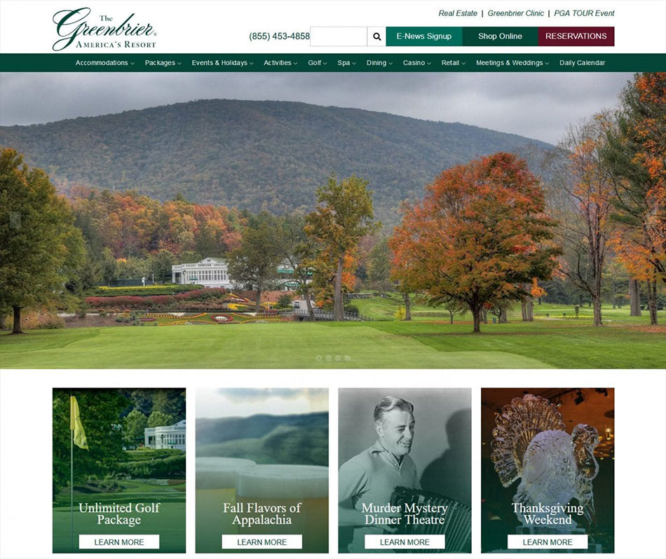

GREENBRIER RESORT.
The luxurious Greenbrier Resort was a challenge to design because they wanted a unique website header and activity calendar. I designed a one of a kind header displaying the resort's phone number, other call to actions, links to additional related websites, and a menu with mouse over image changes. There are interactive features throughout the website to engage with the visitor to learn more about the opulent resort and all the amenities. Activities are displayed in a card-style view with an interactive filter to narrow the choices to find your next adventure. The daily calendar features one optional event that randomly loads from alql of the available events. The visitor can choose the day they are staying from a small graphical calendar. All of the planned activities for that day are displayed. Additional activities are displayed on the right side of the page. All ASP website designs are responsive and display the same website information on mobile phones and tablets.
|

|